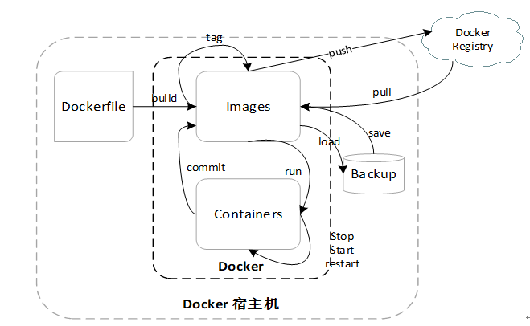

docker 入门指北
@(docker)
[TOC]
what is docker
- docker 是一个用 golang 写的高性能 LXC 管理软件，可以跨平台 ( 非 linux 环境安装的 docker 运行在一个小型虚拟机中 )
- docker 软件包含客户端和服务端 ( C / S )
Gary的影响力：为什么容器技术将主宰世界
谢幺：一个“优雅”技术人眼中，容器与虚拟化的相爱相杀
Docker：Docker Engine Overview
Docker：What is a Container
why docker
docker 解决了我什么问题：
- 快速配置统一的开发环境
- 几乎完美的资源隔离，且消耗小
- CI CD 流水线所有环境都能一致，标准化镜像交付
知乎：Docker 的应用场景在哪里？
什么是 Docker ？容器对应用程序的好处。
Docker五大优势：持续集成、版本控制、可移植性、隔离性和安全性
play with docker
如果你并不准备在自己的机器上安装 docker，可以在这里体验。
https://labs.play-with-docker.com/
一、安装
- linux 下安装 docker
方法一：官方 shell 脚本 https://get.docker.com/
快速安装/更新最新稳定版：1
2$ curl -fsSL get.docker.com -o get-docker.sh
$ sh get-docker.sh
方法二：参考官方文档
https://docs.docker.com/install/linux/docker-ce/centos/
- Mac 下安装 docker
直接下载 .dmg 安装包
https://store.docker.com/editions/community/docker-ce-desktop-mac
- Windows 下安装 docker
没试过，请自行参考文档
https://docs.docker.com/docker-for-windows/install/
二、基础使用
Docker 命令结构图

- 名词解释
- Dockerfile 用于构建镜像的描述文件，描述镜像构建的每个过程
- image 镜像，用于创建容器或作为基础镜像构建新的镜像。
- container 容器，从镜像创建，或保存为新的镜像
- backup 镜像备份 tarball
- registry 镜像仓库，如 dockerhub
- 举个简单的例子
第一步，创建一个 Dockerfile 文件，写入以下内容1
2FROM alpine:3.8
CMD echo "Hello Dockerfile. Hello world."
第二步，保存 Dockerfile 后构建镜像1
$ docker build /path/to/dockerfile/dir -t hello-world
终端会输出构建过程，构建成功后默认打上 latest 标签1
2
3
4
5
6
7
8
9Sending build context to Docker daemon 2.048kB
Step 1/2 : FROM alpine:3.8
---> 196d12cf6ab1
Step 2/2 : CMD echo "Hello Dockerfile. Hello world."
---> Running in 922679fa2740
Removing intermediate container 922679fa2740
---> 4718680a5e3c
Successfully built 4718680a5e3c
Successfully tagged hello-world:latest
第三步，使用该镜像运行一个容器1
2
3$ docker run hello-world
# 会输出以下内容，然后容器退出
Hello Dockerfile. Hello world.
容器状态以应用前台状态为依据，不想让该容器退出，可以这样1
2
3# -t 给容器分配一个 tty
# sh 为容器启动命令，覆盖了 Dockerfile CMD
$ docker run -t hello-world sh
1 | # 如果要让容器后台运行，添加 -d 参数 |
1 | # 可以通过 docker <子命令> --help 大法查看具体使用说明 |
push 镜像到 dockerhub1
2
3# 登录到 dockerhub
$ docker login
# 登录成功后 ~/.docker/config.json 文件中会有 auth 信息
1 | # push 要求镜像命名 username/imageName:tag |
会用 help 大法后，命令结构图中的其他基础操作就由大家自行探索啦。
- 常用命令
TIPS: docker run 是旧版 docker cli 的用法，新版推荐 docker container run，更富有语义及 restful 风格。
- docker container 对容器的操作
- docker image 对镜像的操作
- docker network 对网络的操作
- docker volume 对存储卷的操作
其他命令多数都为上面四个命令的子命令，如1
2
3
4
5
6
7
8
9
10
11
12
13
14# 对容器的某些操作
$ docker container inspect
$ docker container rm
$ docker container ls
# 同样的，对镜像也行
$ docker image inspect
$ docker image rm
$ docker image ls
# 当然，对网络也是阔以滴
$ docker network inspect
$ docker network rm
$ docker network ls
Reference documentation: https://docs.docker.com/reference/